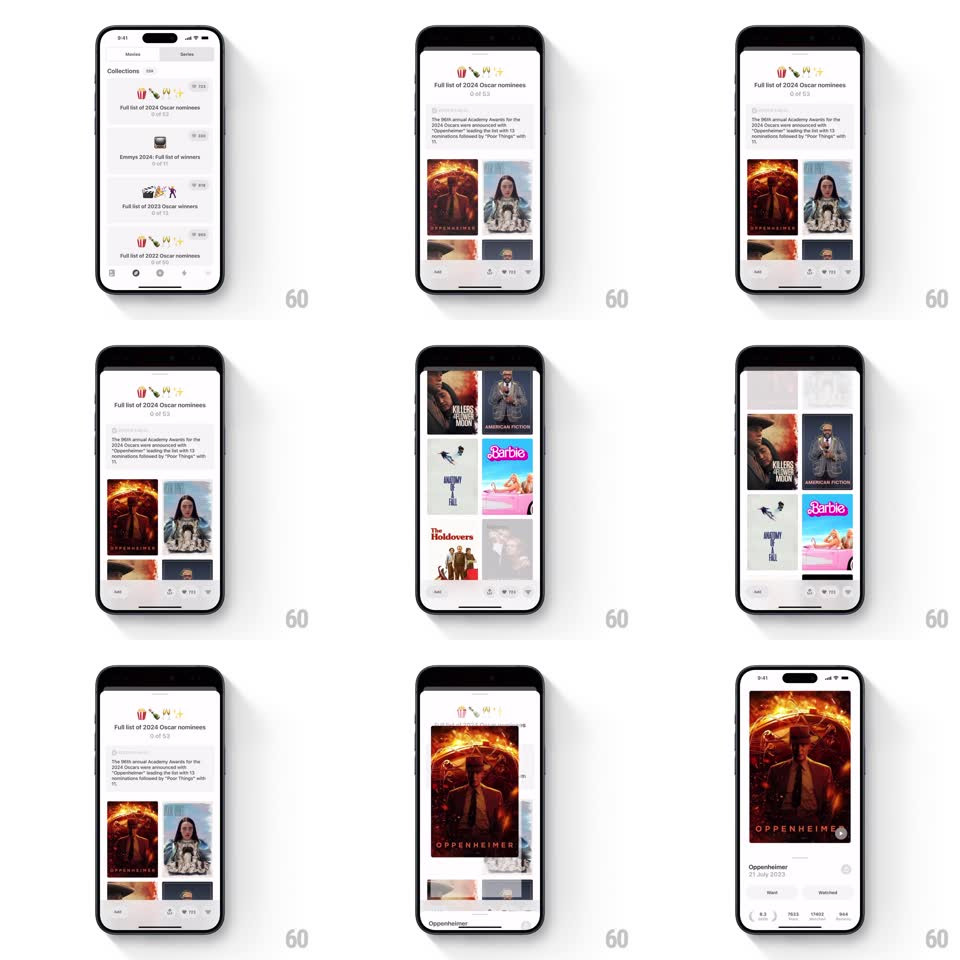

Media
Frame-by-frame

Rebuild this interaction 1:1: Must's collection open - tapping a collections list row expands it into a detail page where the row's artwork becomes the header, then a staggered 2-column poster grid reveals beneath, and tapping a poster shared-elements into its detail.

Rebuild this interaction 1:1: Must's collection open - tapping a collections list row expands it into a detail page where the row's artwork becomes the header, then a staggered 2-column poster grid reveals beneath, and tapping a poster shared-elements into its detail. ## Integration Integration: stack-agnostic spec - springs given as stiffness/damping, timed motions as duration + curve; map every value to your framework and animation library of choice. ## Scene Collections list (rows with small artwork clusters, "Full list of 2024 Oscar nominees", counts). Detail: header with the same artwork cluster and title, description text, then a 2-column grid of movie posters (Oppenheimer, Barbie, Killers of the Flower Moon, Maestro...), action bar at bottom. ## Motion spec Pattern: shared-element list-to-detail with staggered poster reveal. - Tap a row: its artwork cluster expands into the detail header (shared element, spring ~300/24, corner radius animating 8 -> 0) while the row's title slides up into the header position (300ms, ease-out). - The rest of the list fades and slides down away (200ms); description text fades in beneath the header (250ms, 100ms after it lands). - The poster grid staggers in row by row: each poster scales 0.85 -> 1 with a 12px rise (spring ~380/20), 40ms apart, alternating columns - the grid ripples downward. - Tap a poster: it shared-elements into the movie detail's hero (same spring, radius animating back up), the grid behind dimming 30%. - Back: the whole sequence reverses - hero returns to its grid cell, grid ripples out upward, header collapses into the list row. ## Calibration - The stagger is quick (full grid in under 700ms) - browse speed matters more than ceremony. - Shared elements keep aspect fill throughout; no letterbox flash mid-flight. ## Reduced motion Simple crossfades between list, detail, and movie page. ## Don't miss - The artwork cluster is one shared element from row to header - it never disappears or reloads. - The stagger alternates left/right columns so the reveal reads as a wave, not a typewriter.